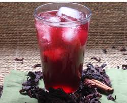

Sobolo

Description
Quench your thirst with sobolo.
Also known as bissp, or zobo, this hibiscus tea is a must try iff you are in Ghana.
Ingredients
- Hibiscus leaves
- Water)
- Sugar
- Ginger
- Fruits/flavours (optional)
Steps
- Wash all ingridients.
- Blend ginger and add to washed hibiscus leaves.
- Boil for 30 minutes.
- Strain and add sugar, fruits pieces and/or flavour to taste. Stir well.
- Serve chilled.